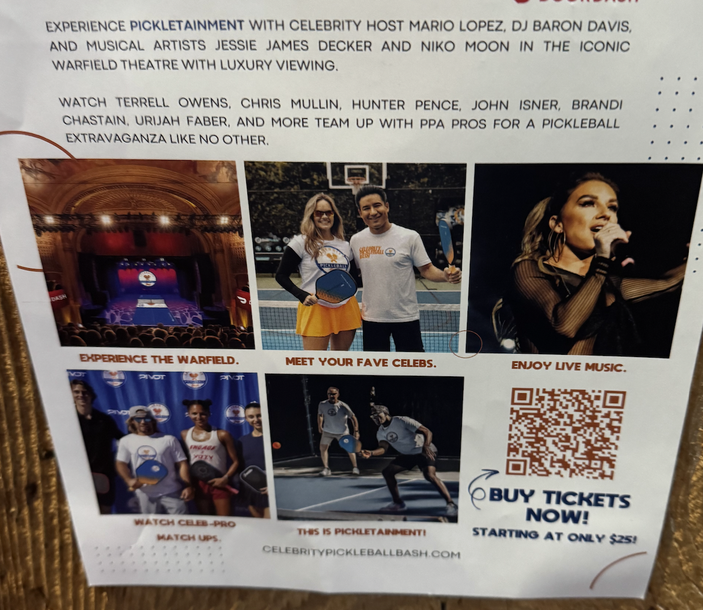
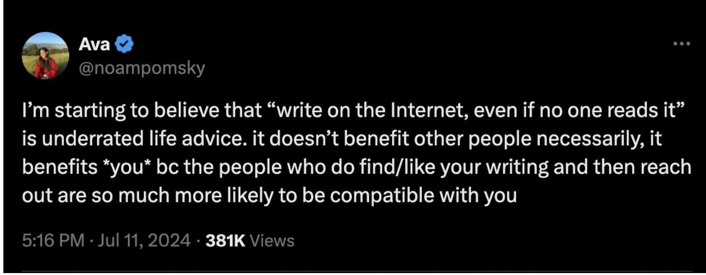
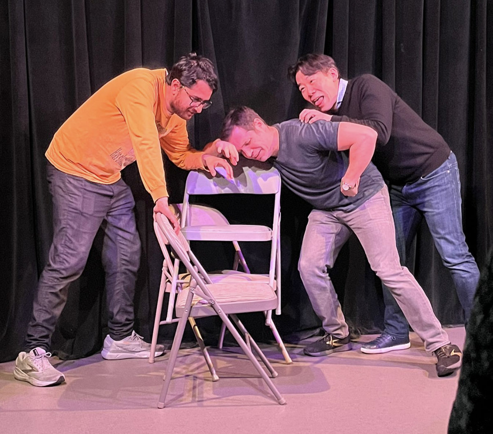
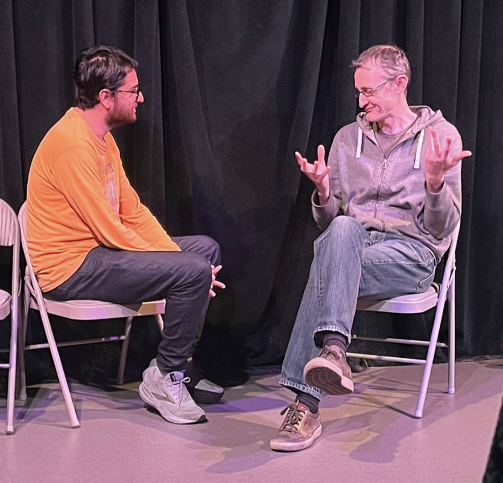

Episode 7
Monday
Today is one of the quietest days I’ve had in a while. Since its a holiday I don’t really do a whole lot other than go for a short walk up to Tank Hill and work on a side project of mine. If it weren’t for the fact that I ran into a friend at a cafe nearby I wouldn’t have really talked to anyone today. Its not the kind of day I like to have all the time but I suppose it is nice to have every once in a while.
Tuesday
Another pretty quiet day. Work is normal and after work I kinda just chill at home. Last Tuesday I complained about being too busy so I suppose these two days are a nice change of pace but if this became the norm for me I would definitely not be happy!
Wednesday
Things pick back up today with Midnight Runners after work! I get to Underdogs for Midnight Runners and I see this poster featuring a bunch of celebrities for some sort of pickleball tournament. The poster says that if I go I can meet all my favorite celebrities but I realize I don’t know who any of these people are. If this poster mentioned Eiichiro Oda was showing up I’d actually be quite interested!

If any of you readers at home know let me know but I think this is a sign that I might be a bit uncultured (a topic we will be diving more into in the Sunday section).
The run itself is one of the best ones I’ve done in a while! I realized the secret is that if I run at a nice chill pace I can actually have fun instead of hating every minute of it! This run I was particularly fortunate as I was running with some friends who were running at my chill pace meaning I could have a conversation and run! Crazy stuff! If I wanted to try harder I could have run faster but I realized that since run club for me is really just a way of getting my steps and meeting people there isn’t really any point. Yeah I might not be improving as much but who cares! I’m not the guy who is gonna run 3 marathons while projecting a V80 and playing pickleball with those celebrities in the poster.
After the run we chill at the bar and hangout. One of the guys I’m talking with is a big sports fan. I realize while talking with him that he knows a lot more about the 49ers than I do despite the fact that he's from New Jersey. So much so to the point that I had to be reminded that the 49ers played in the Superbowl last year. Oh yeah, it’s all coming back to me now.
Thursday
After a normal day of work I have a second date over at Detour. For anyone that wants a refresher on the first date click here. For the most part I think the date goes well. We have fun playing a variety of games. I can tell we are both having a good time but one thing I realize about doing a date like this is that there isn’t a whole lot of time for us to get to know each other per se as most of our conversations are focused on the games we’re playing. We do have some time to just talk when we are eating food.
Personally I really like her. She is super nice, really fun to talk to and has an absolutely lovely smile. She seems like the kind of down to earth person I think I could really vibe with and connect with.
One flag I do notice (whose color I couldn’t quite determine at the time), was the fact that she didn’t really make any offer to pay for or split anything on the second date. Generally I’ve noticed most women I’ve gone on a date with will make some offer to pay by the second date even if I don’t intend to take them up on it or buy something. Some other friends mentioned this may not be a big deal so oh well.
After the date when we’re about to head our separate ways I ask if she is down to meet again and she says she will see how she is feeling after Lunar new years. Now that I feel is a problem as its not really an enthusiastic yes which leaves me feeling a bit uneasy.
Friday
I begin my morning by reading something which really resonates with me. Its a tweet from a writer I’ve been reading a lot of lately who encourages writing in public

If y’all are interested here is the full piece which I quite recommend.
When reading this I immediately thought to myself, “what if I make the newsletter public?”. At first this quite excites me. I read a lot of stuff from strangers online that I quite enjoy and getting to pay it forward would be pretty interesting. Also I figured that while odds are it wouldn’t lead to anything the prospect of some potential novelty intrigues me.
However after thinking about it a bit one roadblock I run into is how to address when I mention friends. I do tend to talk about events with friends in previous newsletters and I may want to do so in the future. I don’t really know how to address this. I’ve seen different writers address this in different ways. Some refer to friends only by their first letter, others will just use their full names and even include pictures. I talked with some friends and they said they wouldn’t feel comfortable if I included their names, others were ok with names or not pictures. In the end I decided that if I were to make it public I would have to change this significantly and I value my creative freedom too much to do that. So in the end the newsletter is staying private but it was still fun to think about. And with that being said I do still want to write something publicly but I’m not quite sure what that would be yet. Who knows?
After work I find myself having to juggle a few different things. I get dinner with some friends over at a curry place. The vibes are immaculate! We’ll call this group of friends Google group small for now. The “Google group” comes from the fact that most all of them work at Google, and you’ll understand later. Unfortunately I have to leave a bit early to go perform in an improv show but not to worry, Google group small will be again brighter than ever in a bit.
I rush over to go perform in my improv show and its a great time! Unfortunately the audience was a bit smaller than it usually is but our small but mighty audience was having a great time. I remember back when I did stand up my stand up teacher told me that even if there is one person in the audience you perform for that one person and with 5 people in the audience we performed for those 5! Here are some pictures, I’m sure you all can guess exactly whats happening from them


Another problem occurred due to a separate improv show running at the same time in a nearby theatre and unfortunately of the 4 friends I invited 3 went to the wrong one. But I like to think the one friend laughed enough for 4 people.
After the show I catch up with all 4 of those friends and I fill the other 3 in on what they missed and they told me about the (obviously less good) show that they attended.
From there I head off to go to a house party that the rest of Google group small is at. While taking an Uber to the party I read a text that my friend who invited me to the party sent suggesting I not wear the unicorn hat. I only see this text while in the Uber so there isn’t a whole lot I can do here so I hide the hat in my jacket and hope nobody notices.
The party itself is pretty fun! It turns out almost everyone at this 50+ person party works at Google so I call this party the “Google group big” party! Usually when I’m at a party like this I like to ask people how they know the host as my way of breaking the ice, but since everyone said Google I changed my strategy and just assumed people worked there until proven otherwise. Since I’ve never been to a Google office before this was the highest density of Googlers I’ve ever seen in a building before.
One of the things that caught my eye was that the hosts of this party made a bingo sheet for things they expected to happen at the party. Some of the notable ones were “Yaps about gym”, “Influencer vibes”, “Group photo (10+ people)”, and my personal favorite “Mentions going to Tahoe tomorrow”.
All the people I talked to there were super fun, my personal favorite was the guy who I convinced to come to Midnight runners and was interested in reading my newsletter. He said that I should hold off on sending them until he showed up to Midnight runners as an incentive for him to show up. I never thought I’d see the day where this newsletter was an incentive to show up to a run club but here we are!
There are a lot of people at this party and you could feel its intense energy radiating out! I quite enjoyed this for a while, although unfortunately close to midnight I did find myself getting quite tired and needing to bow out.
Saturday
Our day begins with trash pickup where we set a record for South Mission at 39 people. I’ve seen more at other pickups but setting the record at this one was great. It would have been better if I had gotten to beat my (self proclaimed) rival trash pickup over at Hayes valley but unfortunately they beat us out by 3 people. Oh well.
After trash pickup I go and get brunch over at Plow. Sorry I meant to say that I watched other people get brunch at Plow while I enjoyed the vibes. While I can’t comment on the food other than it being overpriced the vibes were as immaculate as they always are.
From there I host a boardgame night at my place. Last week I mention that I suffered a crushing defeat in the game I played (Dune imperium) so I made sure to setup the exact same game this week and invite the guy whose never lost so I could get my revenge. They say revenge is a dish best served cold but frankly the pasta I cooked went great with it. I won the game and I gotta say it really made both the lamb and the butternut squash taste even better! Ironically the reason I lost last week was because one of my friends committed a very particular move against me (for those familiar with Dune imperium she stole my faction alliance in the Empror faction which prevented me from reaching end game when I had 10 victory points), and this week she did the same thing which actually helped me win (because in doing so she didn’t have enough troops to beat me in a 2 victory point conflict for control of Arakeen). It was a poetic story arc indeed!
Sunday
Our day begins with trash pickup as per usual. While hanging out afterwards one of my trash friends tries a little bit to set me up with one of my other trash friends. He noticed that the two of us have a lot in common. For one thing we both wear interesting animal hats. I have my unicorn hat (which one of my friends hilariously referred to as a chastity hat), and she has a hat with cat ears on it. He also felt that we’re both pretty quirky people and could be a good match. Unfortunately it turns out that she does have a boyfriend so it doesn’t really work out, but I do appreciate the thought!
While hanging out with my trash friends I realize that I’m quite behind on pop culture and one of them suggests I watch a show called Severance thats supposed to be really good. I suggest that perhaps I should Wikipedia the show so I can min-max getting into the cultural Zeitgeist and which was met with mixed results. If the show weren’t on Apple TV I might actually consider watching it but as things stand now I have no choice but to relegate it to the list of shows that I say I’ll watch but I know I actually won’t.
The friend also suggests I listen to the new bad bunny album. I’m actually doing this now while typing up the newsletter. So far I’ve listened to two songs: La MuDANZA and Stacion. All in all I think its solidly OK. Its not the kind of music I would go and listen to of my own volition but its the kind of music I could vibe with at a bar. A solid 7.37 out of 10.
From trash pickup we go to Dolores park and bask in the niceness of the day. While at Dolores park I see out of the corner of my eye one of my friends on what appears to be a date. Since I think its a date I don’t go up to them but I do hope that if it is a date its going well and if its not I hope you had fun hanging in Dolores regardless!
After Dolores park I head home and chill for a bit and write up this newsletter!